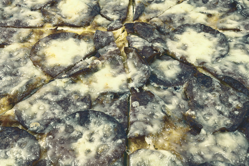

Se sopravvivi...potrai parlarne bene! Se Non vuoi rischiare Scegli un'altra Pizza!
La nostra fantastica Pizza Quasi Scaduta, nasce dall'esigenza di sfruttare tutti quegli ingredienti che spesso finiscono nel bidone dell'umido. Il gusto deciso delle muffe tipiche del nostro territorio ti trasporterà verso orizzonti che difficilmente potrai ammirare lontano dalle nostre sale.
Tramandata da ben 4 generazioni, la ricetta della nostra Pizza Quasi Scaduta, conserva ancora le caratteristiche originali. Il passaggio fondamentale è rappresentato dalla scelta degli ingredienti. Questi vengono scelti con attenzione dai nostri pizzaioli che, talvolta, riescono a creare interessanti varianti. Tutti gli ingredienti vengono aggiunti in cottura e la pizza viene servita almeno dopo 36 ore dal momento in cui esce dal forno, dopo essere stata scaldata nel microonde.
| Valori Nutrizionali | per 100 gr di Prodotto |
|---|---|
| Energia | 1.046 kj (250 kcal) |
| Grassi | 8.2 gr |
| Carboidrati | 30 gr |
| Zuccheri | 1.4 gr |
| Fibra Alimentare | 1.9 gr |
| Proteine | 13 gr |
| Sale | 1.9 gr |
Per gustare al meglio la Pizza Quasi Scaduta ti consigliamo di dissetarti con una Acelia del Birrificio Hop Us Est! di Carbonia, altrimenti consulta il nostro Menù delle Birre.